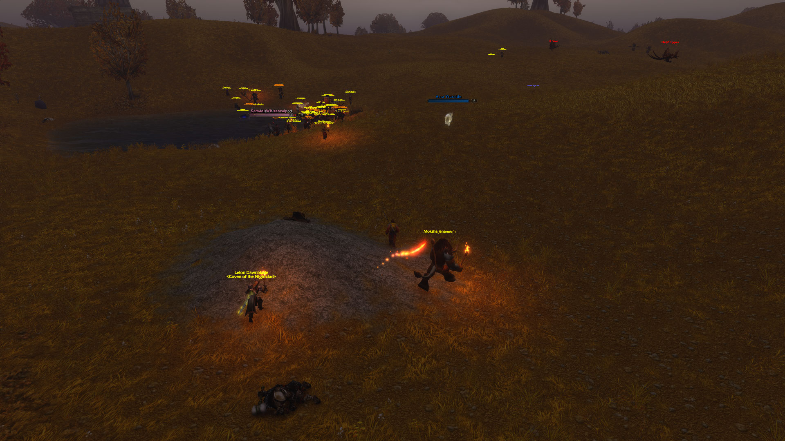
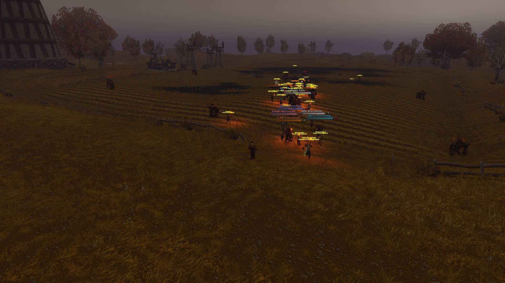

On the way to deliver A Mysterious Message to Gryan Stoutmantle, Xuthar came across an unexpected gathering of Horde players moving together through the fields of Westfall. Three authentic screenshots preserve the surprise.
21:24:16 · Across the Riverpaw HillsFrom a distance, a large crowd appears beyond the gnolls.

21:24:37 · A Crowd on the MoveMore adventurers fill the horizon by the water, with riders and bright effects visible.

21:25:19 · The Western FieldsA sweeping view of the gathered party spread across the ploughed land.
Authentic user screenshots shown here as reduced-size previews; the full-resolution JPG files have not been uploaded to the public repository. The player describes the crowd as a complete Horde guild. The images alone do not establish a guild name or confirm a fight between factions.